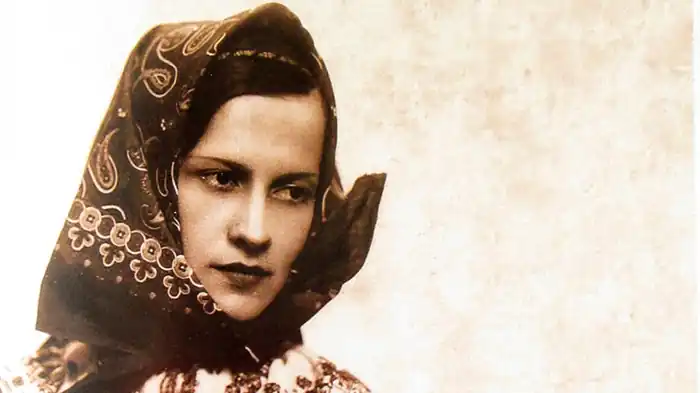

Народилася 15 травня 1907 року у с. Германів (нині Тарасівка Львівського р-ну Львівської обл.) в сім'ї священника і лікаря Івана Яблонського та Модести (доньки отця Антона та Олімпії Ульварських).
Мала сестер Марію (нар. 21.03.1898), яка емігрувала до Австралії, Ольгу (нар. 22.05.1901), братів Ярослава (нар. 23.05.1900), який емігрував до Австралії та Мирона (нар. 20.05.1903).
Раннє дитинство провела в селі поряд з батьком і нянею Юстиною. На початку Першої світової війни 1915 року батько повіз сім'ю до Росії, оскільки був переконаним москвофілом. В Таганрозі Софія відвідувала гімназію. У 1921 році сім'я Яблонських повернулася до рідного краю, а батько переглянув свої погляди, пройшов перевірку та отримав парафію на Львівщині. Лише брат Мирон помер від тифу на чужині. Софія відвідувала учительську семінарію та курси крою і шиття в "Труді", де познайомилася з Оленою Кисілевською, пізніше вчилася книговедення та вступила до драматичної школи, яка відкрила їй двері до театру, де вона з успіхом дебютувала. 1922 року вступила на перший курс учительської семінарії. 1922—1923 роки ― відвідує курс комерційної діяльності для жінок від Національної комерційної академії у Львові (Panstwowa Akademia Handlu we Lwowie). 1924—1925 роки ― навчається в Драматичній школі на курсах акторського мистецтва. 1926 року займається кінопрокатом, керує двома кінотеатрами в Тернополі, співпрацює з маляром Романом Турином. Подорожі світом Софія Яблонська покинула Галичину і у 1927 році поїхала до Парижа, де планувала стати акторкою. Їй навіть доводилося мити вікна офісів задля заробітку. Але мрії не забувала, встигала знятися у невеликій ролі в одній зі стрічок компанії Pathé-Natan, попрацювати натурницею для художників та моделлю. Деякий час жила у цивільному шлюбі з художником Крістіаном Кальяром. Від 1927 року навчається у Парижі техніці знімання документального кіно. В Парижі потоваришувала з Степаном Левинським, українським письменником і дипломатом, захопленим культурою Сходу. Яблонській вдалося в Парижі отримати працю кінорепортерки. Перебуваючи у богемному середовищі французьких митців, зацікавилась ідеями подорожей до екзотичних країн. Вивчила французьку мову, техніку фільмування і вирушила в дальші світові мандри, щоб якомога пізнати культуру інших народів. У грудні 1928 року вирушає в першу далеку мандрівку до Північної Африки, в Марокко. Касабланка — Маракеш — Маґадор — Тарудан — Аґадір — такий маршрут здійснила Яблонська за чотири місяці. У Мароко побувала на землях берберів у Сахарі, куди її застерігали їздити знайомі, оскільки та територія ще не була зайнята французьким іноземним легіоном. Проте Яблонська поїхала та описала надзвичайну гостинність арабів, яким не можна було відмовляти, бо "нічого більше не ображає арабів, як небажання до їжі". В кінці березня 1929 року повертається до Парижу. Побачені звичаї, колорит, отрмані емоції Яблонська яскраво описує у книзі "Чар Марока", яка побачила світ у 1932 році. Літо-осінь 1929—1930 років Яблонська проводить в місті Криниця-Здруй, яке було відомим курортом (теперішня територія Польщі). Там удвох з мамою Модестою орендують пансіонат і здають відпочивальникам номери. Цим невеликим бізнесом заробляють гроші. На сторінках часопису "Діло" за ті роки можна віднайти, приміром, таке оголошення: "Всякі недуги, навіть найбільш задавнені, можна вилікувати лише в Криниці, пансіонах п. Яблонської". Пансіони мали назви: "Зніч", "Флора", "Татрянська вілла", "Владислава". На початку 1930-х Софія Яблонська сама вела пансіони "Зніч", "Владислава", "Зют". Ім'я художника Никифора Дровняка із Криниці відкрила світові саме Яблонська. Навпроти її пансіону німий митець малював картини і продавав їх туристам. Невдовзі друг Яблонської Роман Турин влаштував чоловікові першу персональну виставку у Парижі. У грудні 1931 року підписала контракт з товариством "Опторг Юнан-Фу" щодо створення документальних нарисів та їде в навколосвітню подорож. Через Порт-Саїд, Джибуті, Цейлон у французький Індокитай, відвідала Лаос, Камбоджу, провінцію Юньнань (Китай), Сіам, Малайський архіпелаг, Яву та Балі, острів Таїті, Австралію й Нову Зеландію, Північну Америку (США та Канаду). Після навколосвітньої подорожі, в січні 1935 року, Софія Яблонська приїздить до Криниці та відвідує матір, сестру і брата. Проводить творчі зустрічі та публічні виступи. Жіноче товариство школи ім. Шевченка запрошує її виступити перед старшими ученицями. На прохання тогочасних часописів С. Яблонська почала писати репортажі і нариси, які були опубліковані протягом 1930-х у часописах Жіноча доля (Коломия), Нова Хата та "Нові Шляхи", "Ми і Світ", "Назустріч", "Діло". Постать Яблонської була популярною серед феміністично налаштованої молоді тодішньої Галичини. 1939 року Яблонська востаннє приїздить до Галичини, встигає побачитись з родиною та друзями. В липні покидає українську землю назавжди. На прощання українки зі Львова подарували їй українську ляльку-гуцулку, з якою мисткиня ніколи не розлучалася. Лялька перебула з нею всі інші малі та великі подорожі, лихоліття війни. Кілька місяців живе в Парижі, а 29 вересня 1939 року прибуває в Індокитай. 29 жовтня 1939 року батько Яблонської, дізнавшись про окупацію радянськими військами і анексію Галичини, вчинив самогубство. Він уже відчув на собі більшовицький режим, перебуваючи в Росії у 1918—1921 роках. 15 років Яблонська прожила в Китаї, де познайомилася і одружилася з французом Жаном Уденом. Народила і виховала трьох синів — Алана, Данка Мішеля і Жака Мірка. Старший син Алан був військовим лікарем, помер на Алжирській війні 1961 року. Молодший Жак Мірко Уден Jacques Oudin (фр. homme politique) був відомим у Франції політиком, двічі обирався сенатором, протягом двох термінів засідав у Фінансовому комітеті країни, має наукову ступінь з права, лицар Почесного Легіону, лицар ордену Palmes academiques, нагороджений орденом за заслуги в сільському господарстві. 1946 року сім'я повернулася до Європи й оселилися спочатку в Парижі. В цей період Яблонська пережила кілька важких втрат: 1946 року помер Степан Левинський, потім трагічна смерть сестри Ольги, згодом смерть матері, 1955 року важко переживає трагічну смерть чоловіка. Після всіх втрат покидає Париж і виїздить на о. Нуармутьє (Франція). Там захопилася архітектурою і дизайном, побудувала віллу за власним проєктом у вандейському стилі, самостійно облаштовувала і декорувала її. Вийшло так вдало, що почала проєктувати будівлі на замовлення. Один із будинків за її проєктом був відзначений місцевою комісією архітекторів як художня цінність острова. Співпрацювала із поетесою Мартою Калитовською, яка стала їй вірною подругою і помічницею. Знову повернулася до літературної творчості, написала повість-спогад "Розмова з батьком", в якій торкнулася свого дитинства і всього рідного. 4 лютого 1971 року Софія Яблонська загинула у автокатастрофі, везучи до видавництва свою нову книгу оповідань і нарисів "Дві міри — дві ваги". Спершу похована біля чоловіка у містечку Вернує, у 1973 році їх обох перепоховали на Нуармутьє. До кінця життя Софія Яблонська берегла три речі: Шевченкового "Кобзаря", гуцульську ляльку, що її подарували на Галичині, і дерев'яну різьблену мищину. Марта Калитовська впорядкувала, переклала французькою і видала посмертно книги Софії Яблонської: "L'Année ensorcelée, Les Horizons lointains" (1972), "Le charme du Maroc" (1973), "Mon enfance en Ukraine" (1981), "Au pays du riz et de l'opium" (1986), і українською "Дві міри — дві ваги" (1972) рік. Авторка збірки епічних творів: "Чар Марока" (1932), "З країни рижу та опію" (1936), "Далекі обрії" (у 2 ч., 1936 і 1939), збірки нарисів і оповідань "Дві міри — дві ваги" (1972, посм.), книги спогадів "Книга про батька. З мого дитинства" (1977, Едмонтон, посмертно). У всіх виданнях вміщувала власні фотографії, які вдало ілюстрували побут і культуру екзотичних країв і народів.